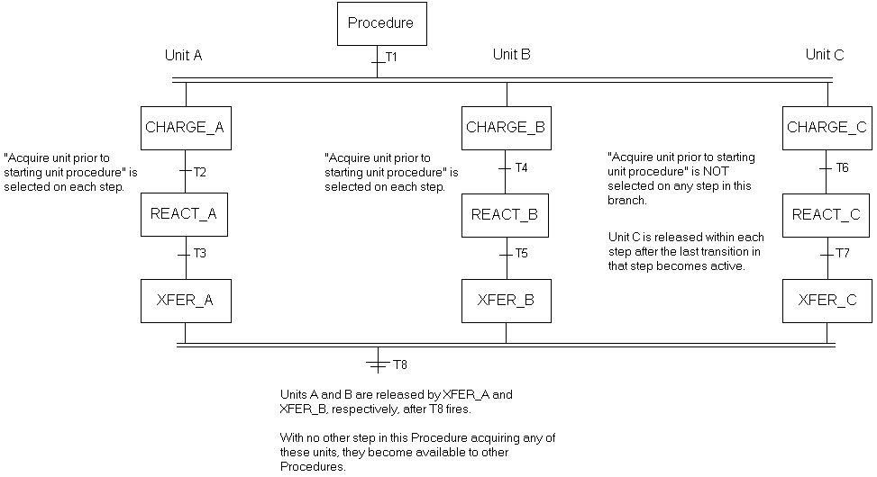
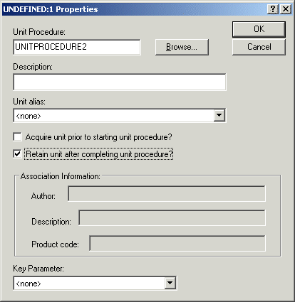
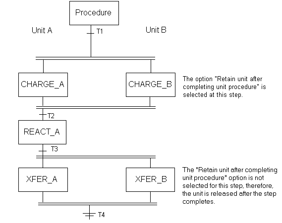
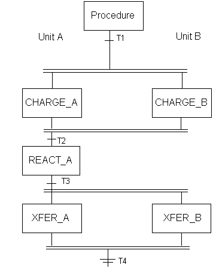

Keeping a unit acquired
You can acquire and/or retain a unit using either a recipe configuration method at the Procedure level or by using phase request codes. These methods can be combined for unit management of multiple units.
Acquiring a unit may require the operator to bind the unit at runtime on class-based recipes. Once bound, the unit can then be acquired and retained.
Recipe Configuration Method
Each Unit Procedure in a Procedure has two check boxes that can be set in the Properties dialog that specify how units should be acquired and retained. These options can be used together or separately.
Acquire unit prior to starting unit procedure? - When selected, the recipe waits at the Unit Procedure until the unit is acquired. You can select this option on some steps (unit procedures) and not on others, depending on whether or not you need the units in the particular Unit Procedures acquired before beginning those Unit Procedures. The acquiring of a unit usually occurs at the Unit Procedure's initial step, unless this option is enabled. Also, the equipment is normally acquired on behalf of the Unit Procedure whereas, with this option enabled, the Procedure becomes the owner.
In parallel branches, all Unit Procedures with this option selected wait until all requested units are acquired for each branch. However, any branch that does not have the Acquire unit prior to starting unit procedure? option selected can start without waiting for the other branches to acquire their requested units.
It is important to note that the use of the Acquire unit prior to starting unit procedure? option affects how units are released. Without this option selected, units are released after the last transition in the Unit Procedure goes active. However, when the Acquire unit prior to starting unit procedure? option is selected, it is the Unit Procedure that performs the acquire and release function. Also, there is an optimization where the preceding Unit Procedure does not release its bound unit if it has the acquire flag on and the next Unit Procedure has this option enabled and is bound to the same unit.
Example: A Procedure that has three parallel branches configured to each run on separate, single units (A, B, and C). In the figure below, the branches labeled Unit A and Unit B have the Acquire unit prior to starting unit procedure? option selected on each Unit Procedure but the branch labeled Unit C does not. The Procedure will wait on Unit Procedures CHARGE_A and CHARGE_B until Unit_A and Unit_B have both been acquired before starting these branches; however, CHARGE_C starts when Unit C is acquired and does not wait for Unit A or Unit B to be acquired.

In this example, Units A and B are not released after the last transition within each Unit Procedure of their respective branches goes active. Since no other Unit Procedure requiring the respective units with the Acquire unit prior to starting unit procedure? option selected exists across T8, XFER_A and XFER_B will release Units A and B after T8 goes active. On the other hand, Unit C is released after the last transition in Unit Procedure (that is, the last transition in CHARGE_C, REACT_C, and XFER_C) goes active. Unit C, therefore, is free to be acquired by any Unit Procedure needing it at each of these points.
Retain unit after completing unit procedure? - When selected, the acquired unit is not released until the Procedure completes, or, until execution completes on the next Unit Procedure using the same unit that does not have this option selected.

For example, there are two units, Unit_A and Unit_B and both are used in the same Procedure. Unit_A requires charging, reacting and then transferring to another unit (Unit_Z) which is used in another Procedure. Unit_B requires charging and then waiting for Unit_A to react. After Unit_A finishes its REACT_A step, Unit_B contents are transferred to Unit_Z along with the contents of Unit_A.
It is important in the following recipe that Unit_B remain acquired by the Procedure until Unit_A transfers. One method of ensuring this is to select the Retain unit after completing unit procedure? option for the appropriate Unit Procedures. With this option selected on CHARGE_B, once Unit_B is acquired, it will remain acquired until the entire Procedure completes or until reaching a later Unit Procedure using Unit_B that does not have the Retain unit after completing unit procedure? option checked. During this retained time, no other recipe can acquire the unit (Unit_B in this example).

The Acquire Unit Before and Retain Unit After options can be used together to ensure the units are available to the recipe as long as they are needed. Some care should be taken to understand how and when to acquire and release units so that a unit is not released too soon (and therefore able to be acquired elsewhere)..

For example, if you were to combine the Retain unit after completing unit procedure? option with the Acquire unit prior to starting unit procedure? option in the above recipe example, Unit_B would behave as shown in the following table.
Unit Procedure Name
Acquire Unit before...
Retain Unit after...
Behavior
CHARGE_B
YES
YES
Unit_B is acquired by the Unit Procedure, CHARGE_B, and again by the initial step in XFER_B.
Unit_B is released either when the entire batch completes normally or is removed from the batch list.
XFER_B
YES
YES
CHARGE_B
YES
NO
Unit_B is acquired by the Unit Procedure, CHARGE_B, and again by the initial step in XFER_B.
Unit_B is released when each succeeding transition (T2 and T4) becomes active.
XFER_B
YES
NO
CHARGE_B
NO
NO
Unit_B is acquired by the initial step in CHARGE_B. It is released after the last transition in CHARGE_B goes active.
Unit_B is again acquired when the initial step in XFER_B starts and is released after the last transition in CHARGE_B goes active.
XFER_B
NO
NO
CHARGE_B
NO
YES
CHARGE_B can start without acquiring Unit_B.
Unit_B is not released after CHARGE_B completes. It is released when XFER_B completes.
XFER_B
NO
NO
Note:All resources still acquired are released when the batch normally completes, is removed, or is reset with the Release retained resources for reset batch option enabled.
Phase Request Method
You can keep a unit acquired through the use of phase requests. An "Acquire and Hold Requests" (phase request code 45xx) request must be completed for the unit from a phase not on the unit. This must be done before the unit is used. A separate "Release Held Resource" request (phase request code 46xx) is done when it is desired to release the unit.